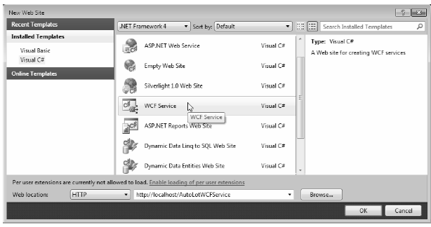

This chapter’s final example shows you how to construct WCF data contracts. The previous WCF services defined simple methods that operate on primitive CLR data types. When you use of any of the HTTP binding types (e.g., basicHttpBinding and wsHttpBinding), incoming and outgoing simple data types are automatically formatted into XML elements. On a related note, if you use a TCP-based binding (such as netTcpBinding), the parameters and return values of simple data types are transmitted using a compact binary format.
Note The WCF runtime will also automatically encode any type marked with the [Serializable] attribute; however, this is not the preferred way to define WCF contracts, and it is only included for backwards compatibility.
However, when you define service contracts that use custom classes as parameters or return values, you must define these types using a data contract. Simply put, a data contract is a type adorned with the [DataContract] attribute. Likewise, you must mark each field you expect to be used as part of the proposed contract with the [DataMember] attribute.
Note If a data contract contains fields not marked with the [DataMember] attribute, those fields will not be serialized by the WCF runtime.
Next you’ll see how to construct data contracts. Begin by creating a brand-new WCF service that interacts with the AutoLot database you created in Chapter 21. Also, you will create this final WCF service using the web-based WCF Service template. Recall that this type of WCF service will automatically be placed into an IIS virtual directory, and it will function in a similar fashion to a traditional .NET XML web service. Once you understand the composition of such a WCF service, you should have little problem porting an existing WCF service into a new IIS virtual directory.
Note This example assumes you are somewhat comfortable with the structure of an IIS virtual directory (and IIS itself). If this is not the case, see Chapter 32 for details on this subject.
Use the File > New > Web Site menu option to create a new WCF service named AutoLotWCFService, and then expose this service from the following URI: http://localhost/AutoLotWCFService (see Figure 25-19). Also, make sure the Location dropdown list has HTTP as the active selection.
Figure 25-19 Creating a web-centric WCF service
After you done this, set a reference to the AutoLotDAL.dll assembly you created in Chapter 21 (using the Website > Add Reference menu option). You have been given some example starter code (located under the App_Code folder), which you will want to delete. Begin by renaming the initial IService.cs file to IAutoLotService.cs, and then define the initial service contract within your newly named file:
[ServiceContract] public interface IAutoLotService { [OperationContract] void InsertCar(int id, string make, string color, string petname); [OperationContract] void InsertCar(InventoryRecord car); [OperationContract] InventoryRecord[] GetInventory(); }
This interface defines three methods, one of which returns an array of the (yet-to-be-created) InventoryRecord type. You might recall that the GetInventory() method of InventoryDAL simply returned a DataTable object, and this might make you wonder why your service’s GetInventory() method does not do the same.
While it would work to return a DataTable from a WCF service method, recall that WCF was built to honor the use of SOA principles, one of which is to program against contracts, not implementations. Therefore, you won’t return the .NET-specific DataTable type to an external caller; instead you will return a custom data contract (InventoryRecord) that will be correctly expressed in the contained WSDL document in an agnostic manner.
Also note that the interface listed previously defines an overloaded method named InsertCar(). The first version takes four incoming parameters, while the second version takes an InventoryRecord type as input. You can define the InventoryRecord data contract as follows:
[DataContract] public class InventoryRecord { [DataMember] public int ID; [DataMember] public string Make; [DataMember] public string Color; [DataMember] public string PetName; }
If you were to implement this interface as it now stands, and then build a host and attempt to call these methods from a client, you might be surprised to see you’ll get a runtime exception. The reason: One of the requirements of a WSDL description is that each method exposed from a given endpoint must be uniquely named. Thus, while method overloading works just fine as far as C# is concerned, the current web service specifications do not permit two identically named InsertCar() methods.
Fortunately, the [OperationContract] attribute supports a named property (Name) that allows you to specify how the C# method will be represented within a WSDL description. Given this, you can update the second version of InsertCar() as follows:
public interface IAutoLotService { ... [OperationContract(Name = "InsertCarWithDetails")] void InsertCar(InventoryRecord car); }
Now rename Service.cs to AutoLotService.cs. The AutoLotService type implements this interface as follows (be sure to import the AutoLotConnectedLayer and System.Data namespaces into this code file):
using AutoLotConnectedLayer; using System.Data; public class AutoLotService : IAutoLotService { private const string ConnString = @"Data Source=(local)\SQLEXPRESS;Initial Catalog=AutoLot"+ ";Integrated Security=True"; public void InsertCar(int id, string make, string color, string petname) { InventoryDAL d = new InventoryDAL(); d.OpenConnection(ConnString); d.InsertAuto(id, color, make, petname); d.CloseConnection(); } public void InsertCar(InventoryRecord car) { InventoryDAL d = new InventoryDAL(); d.OpenConnection(ConnString); d.InsertAuto(car.ID, car.Color, car.Make, car.PetName); d.CloseConnection(); } public InventoryRecord[] GetInventory() { // First, get the DataTable from the database. InventoryDAL d = new InventoryDAL(); d.OpenConnection(ConnString); DataTable dt = d.GetAllInventoryAsDataTable(); d.CloseConnection(); // Now make a List<T> to contain the records. List<InventoryRecord> records = new List<InventoryRecord>(); // Copy the data table into List<> of custom contracts. DataTableReader reader = dt.CreateDataReader(); while (reader.Read()) { InventoryRecord r = new InventoryRecord(); r.ID = (int)reader["CarID"]; r.Color = ((string)reader["Color"]); r.Make = ((string)reader["Make"]); r.PetName = ((string)reader["PetName"]); records.Add(r); } // Transform List<T> to array of InventoryRecord types. return (InventoryRecord[])records.ToArray(); } }
There isn’t too much to say about the preceding code. For the sake of simplicity, you hard-code the connection string value (which you might need to adjust based on your machine settings), rather than store it in your Web.config file. Given that your data access library does all the real work of communicating with the AutoLot database, all you need to do is pass the incoming parameters to the InsertAuto() method of the InventoryDAL class type. The only other point of interest is the act of mapping the DataTable object’s values into a generic list of InventoryRecord types (using a DataTableReader), and then transforming the List<T> into an array of InventoryRecord types.
When you create a web-centric WCF service, you will find your project contains a specific file with a *.svc file extension. This particular file is required for any WCF service hosted by IIS; it describes the name and location of the service implementation within the install point. Because you have changed the names of your starter files and WCF types, you must now update the contents of the Service.svc file as follows:
<%@ ServiceHost Language="C#" Debug="true"
Service="AutoLotService" CodeBehind="~/App_Code/AutoLotService.cs" %>
Note Under .NET 4.0, it is now possible to deploy a WCF service to an IIS virtual directory without a *.svc file. However, doing this means that your entire service can be nothing more than a collection of C# code files. Your service will also look highly similar to a traditional ASP.NET XML Web Service! To see more details, look up the following topic in the .NET Framework 4.0 SDK documentation: “What’s new in Windows Communication Foundation.”
The Web.config file of a WCF Service created under HTTP will use a number of the .NET 4.0 simplifications examined earlier in this chapter. As will be described in more detail during your examination of ASP.NET later in this book, the Web.config file serves a similar purpose to an executable’s *.config file; however, it also controls a number of web-specific settings. For this example, notice that MEX is enabled, and you do not have to specify a custom <endpoint> manually:
<configuration> <system.web> <compilation debug="false" targetFramework="4.0" /> </system.web> <system.serviceModel> <behaviors> <serviceBehaviors> <behavior> <!-- To avoid disclosing metadata information, set the value below to false and remove the metadata endpoint above before deployment --> <serviceMetadata httpGetEnabled="true"/> <!-- To receive exception details in faults for debugging purposes, set the value below to true. Set to false before deployment to avoid disclosing exception information --> <serviceDebug includeExceptionDetailInFaults="false"/> </behavior> </serviceBehaviors> </behaviors> </system.serviceModel> <system.webServer> <modules runAllManagedModulesForAllRequests="true"/> </system.webServer> </configuration>
Now you are free to build any sort of client to test your service, including passing in the endpoint of the *.svc file to the WcfTestClient.exe application:
WcfTestClient http://localhost/AutoLotWCFService/Service.svc
If you wish to build a custom client application, you can use the Add Service Reference dialog box, as you did for the MagicEightBallServiceClient and MathClient project examples earlier in this chapter.
That wraps up your look at the Windows Communication Foundation API. Of course, there is much more to WCF than could be covered in this introductory chapter; however if you understand the materials presented here, you are in great shape to seek out more details as you see fit. Be sure to consult the .NET Framework 4.0 SDK documentation if you want to learn more about WCF.